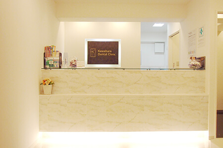
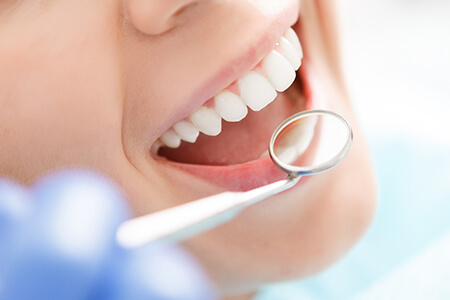
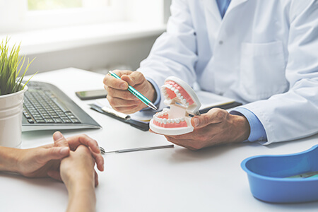
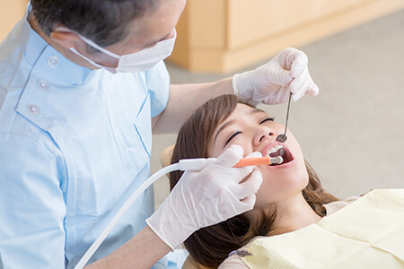
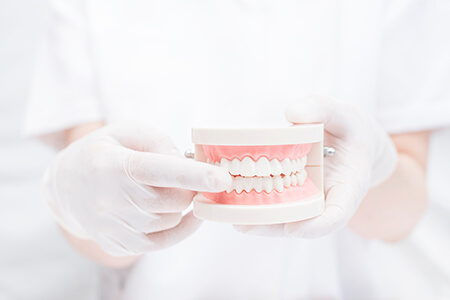

- TOP
- 治療の流れ
初めてご来院の方へ

大阪府高槻市の歯医者「河原歯科クリニック」に初めてご来院の方へ、診療の流れをご案内します。当クリニックでは、親身になって患者様のお口の健康をサポートするため、担当医・担当衛生士制を採用しています。いつも同じスタッフが、カウンセリングを大切にし、小さな変化も見逃さないよう診療いたします。当クリニックで安心して診療を受けていただくため、患者様は以下のお願いもご覧ください。
患者様へのお願い
河原歯科クリニックでは、待ち時間をできるだけ少なくするとともに、スムーズに診療をご提供できるよう、ご予約制を採用しております。担当歯科医や歯科衛生士との診療の事前予約については、以下のようなお願いがございます。
- ご予約の変更またはキャンセルは、前日までにご連絡ください。
- お約束のお時間に遅れる場合は、必ずご連絡ください。また、お痛みがあるなど救急の場合も、ご連絡のうえでのご来院をお願いします。
- ご連絡がないまま予約時間に間に合わないときには、別の日に変更させていただく場合がありますのでご了承ください。
- 当日のキャンセルや無断キャンセルが何回もある方は、予約が取りづらくなります。
救急患者様のご来院、予定していた患者様の遅れてのご来院、予想外の治療時間の延長などにより、お待たせすることがあるかもしれません。しかし、できるだけご迷惑をかけないように努力を続けてまいりますので、ご理解ご協力のほど、よろしくお願いいたします。
診療の流れ
- Step 01
-
予約
当クリニックは、「担当医・担当衛生士制」を採用しているため、事前のご予約が必要です。お電話またはWeb予約から、あらかじめご予約をお願いいたします。
- Step 02
-
初診カウンセリング
ご予約した日時にご来院いただきましたら、まず、問診票とヒアリングシートにご記入ください。内容を確認しながらヒアリングを行います。今回のご来院のおもな理由「主訴：しゅそ」や、これまでどのような治療を受けていらしたか、これからの治療で望んでいらっしゃること、求めていらっしゃることをじっくりうかがいます。状況に応じて、随時カウンセリングの時間は調整いたしますのでご安心ください。
- Step 03
-
応急処置

痛みや出血があるなど、すぐに処置が必要な場合は、応急処置から開始いたします。ご予約の際か問診の際にお知らせください。
- Step 04
-
歯科衛生士による口腔内診査
カウンセリングのあとは、口腔内を視診し、さまざまな情報を得るための検査をいたします。歯と歯ぐきの溝（歯周ポケット）の検査や口腔内写真の撮影、レントゲン撮影などを行います。
- Step 05
-
治療方針カウンセリング

患者様とのカウンセリングの内容や検査のデータで得られた口腔内情報から、歯科衛生士とドクターが相談して、治療の流れを決め計画を立てます。治療計画の選択肢を患者様にご提案し、ご納得されたうえで決定していきます。それぞれの治療法のメリット・デメリット、治療をしなかった場合のメリット・デメリットとともに、治療期間や費用なども分かりやすく丁寧にご説明いたします。治療内容によっては、補綴カウンセリングなども行っていますのでご相談ください。
- Step 06
-
治療

当クリニックではインフォームドコンセント（説明と同意）を大切にしていますので、治療を開始するのは患者様のご同意をいただいたあとです。相談して決めた治療方針と治療計画に沿って、担当の歯科医師が治療を進めていきます。不安なことや疑問がありましたら、いつでもご相談ください。
- Step 07
-
予防

治療が終了しましたら、予防のためのメインテナンスの開始です。メインテナンスは、治療後のよい状態を保つために欠かせません。基本はご自宅でのセルフケアですので、カウンセリングでその重要性をお伝えし、どのようにするのかをアドバイスいたします。メインテナンスのためにご来院いただいた際には、担当の歯科衛生士が患者様に寄り添った予防法をご提供いたします。